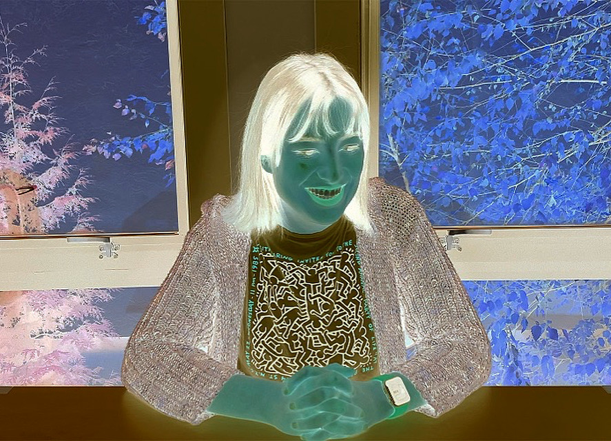

Assignment A1 (Part 2): The programming assignment had the goal of inputting an image into my code, processing it, and outputting it. I furthered my familiarization with image programming.
The original image I chose of my face was the following:
I processed the original image to achieve a grayscale image filter. I was able to do this by nesting two for loops over the rows and columns of the image array. I then retrieved each color channel through indexing into the rows and columns. Lastly I re-assigned the values of the color channels with their average.
I processed the original image to achieve an inverted color image filter. I was able to do this by nesting two for loops over the rows and columns of the image array. I then retrieved each color channel through indexing into the rows and columns. Lastly I re-assigned the values of the color channels with their differences from 255.
